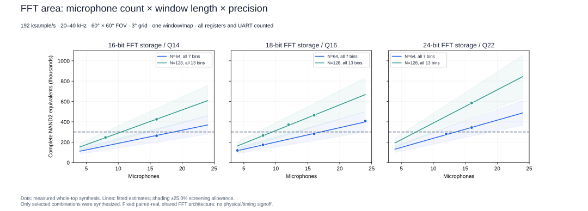
Measured points and fitted curves, separated by FFT storage precision. All in-band bins are retained.
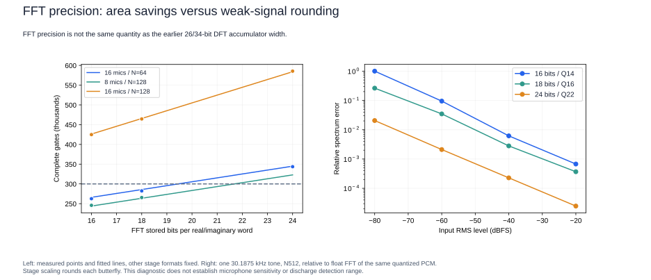
FFT working precision affects every stored sample and every butterfly. Weak-signal checks are separate from ordinary-level scene tests.
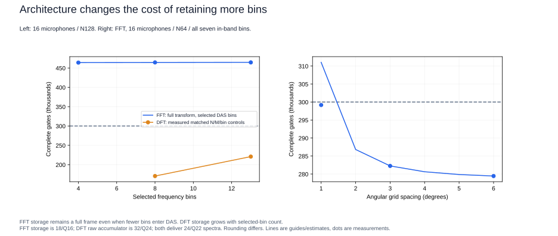
Matched microphone/window/bin comparisons. Internal numerical formats differ and are named; neither architecture receives free memory.
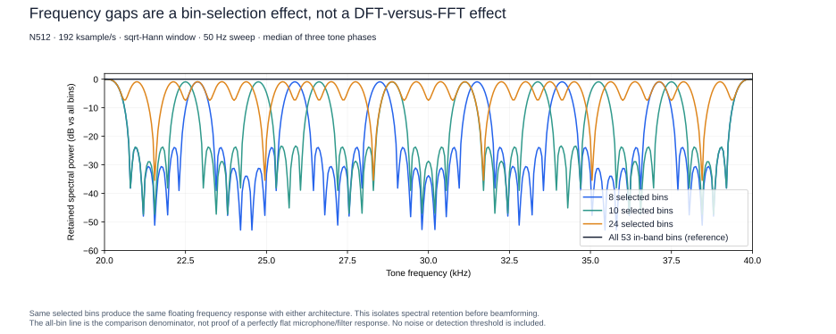
401 frequencies expose narrowband gaps. Any architecture retaining the same sparse bins has this limitation.
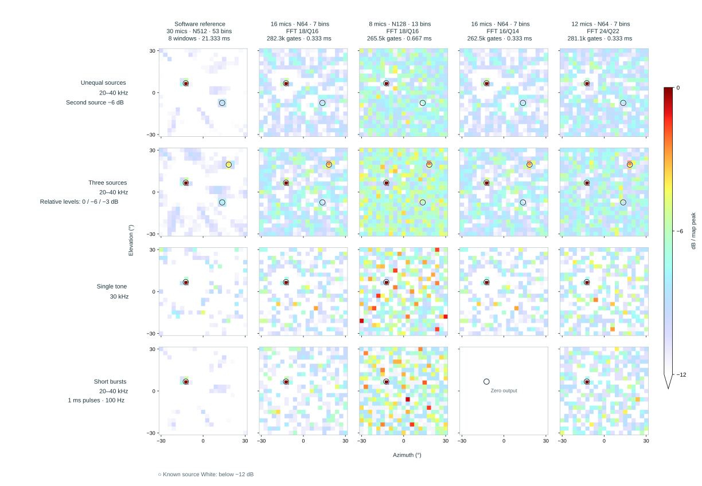
Four configurations on identical recordings. Read the window duration, numerical format and absolute-power ratio alongside the normalized image.
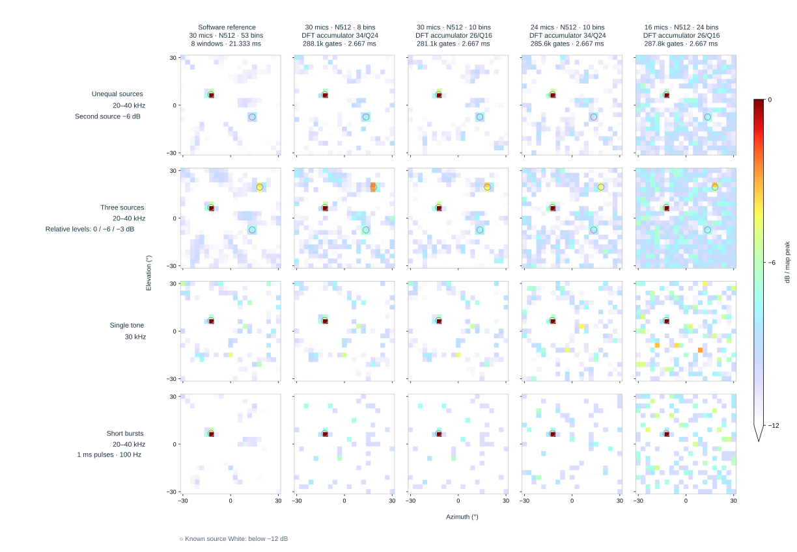
Four configurations on identical recordings. Read the window duration, numerical format and absolute-power ratio alongside the normalized image.
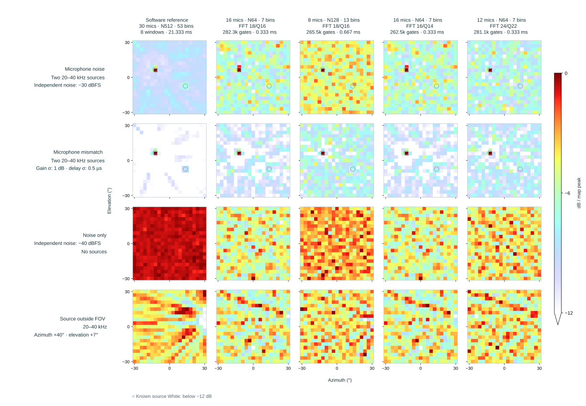
Four configurations on identical recordings. Read the window duration, numerical format and absolute-power ratio alongside the normalized image.
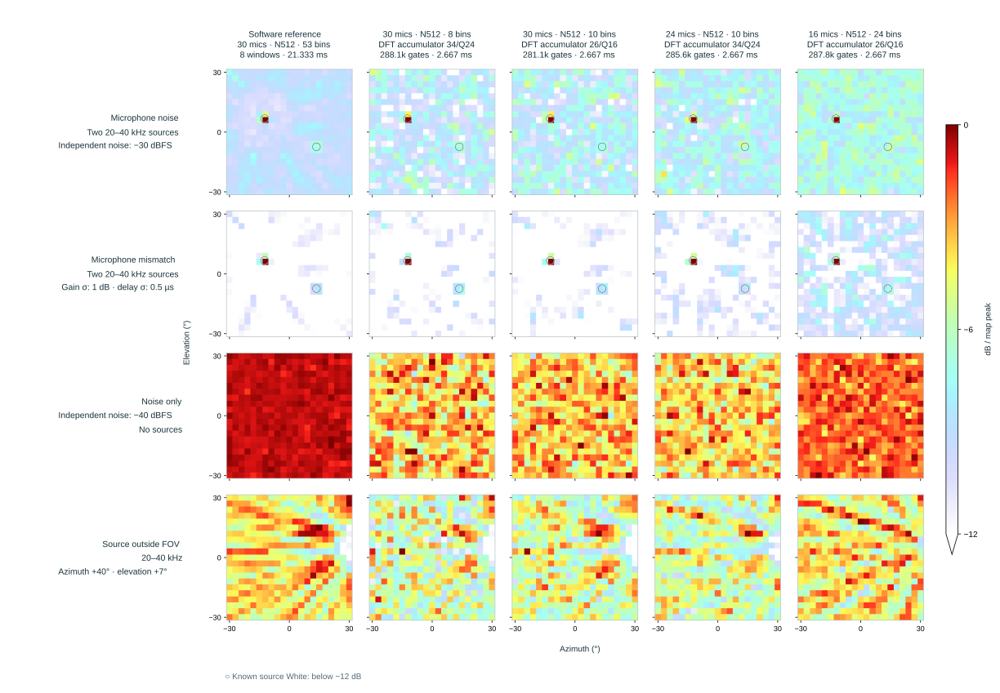
Four configurations on identical recordings. Read the window duration, numerical format and absolute-power ratio alongside the normalized image.
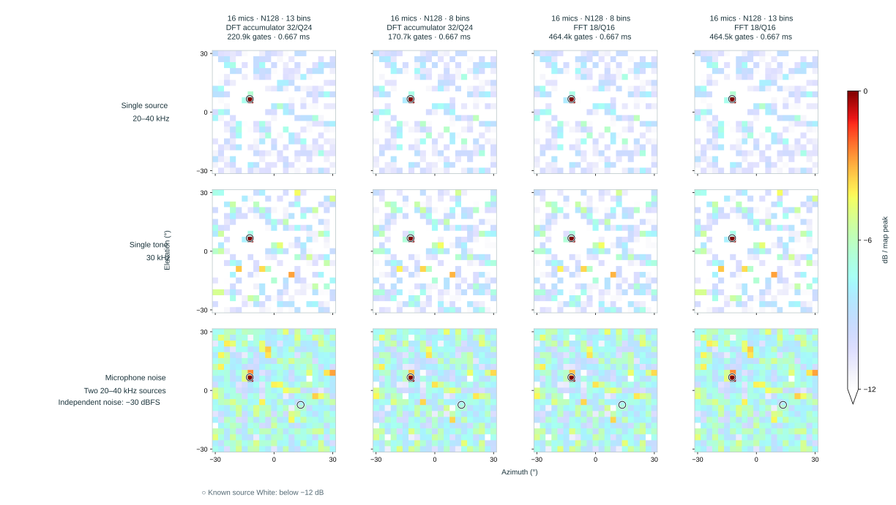
Four configurations on identical recordings. Read the window duration, numerical format and absolute-power ratio alongside the normalized image.
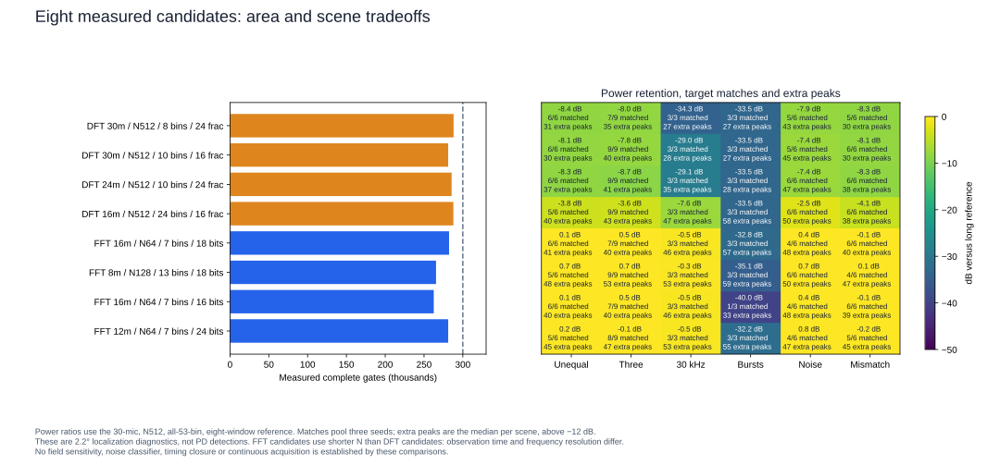
Measured whole-top gate counts, power retention and diagnostic localization counts. Different window lengths and precision are explicit.
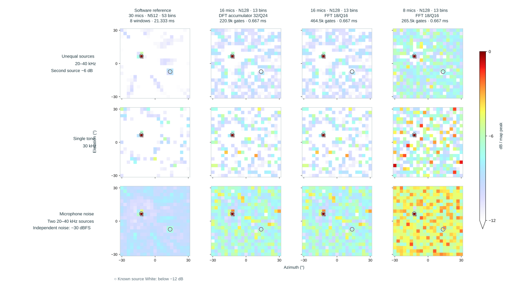
Four configurations on identical recordings. Read the window duration, numerical format and absolute-power ratio alongside the normalized image.
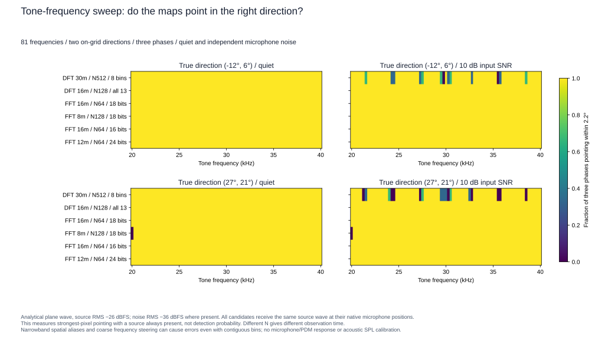
Quiet/noisy plane-wave sweep isolates tone frequency, short-window steering and spatial ambiguity. Each pixel pools three phases; these are not field detection rates.